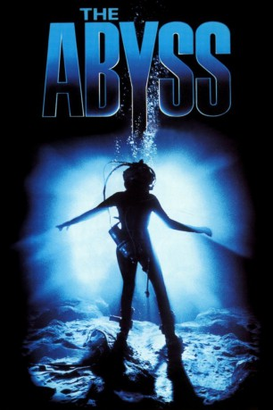

Auszeichnungen: 1 Oscars gewonnen für 3 Oscars nominiert
 gesehen am 07.03.2016
gesehen am 07.03.2016Alternativ: The Abyss
Auszeichnungen: 1 Oscars gewonnen für 3 Oscars nominiert gesehen am 07.03.2016
 
 IMDB-Wertung: 7.6 / 10
IMDB-Wertung: 7.6 / 10  Metascore:
Metascore: 
Ein nukleares Unterseeboot der US-Navy wird in 600 Meter Tiefe auf geheimnisvolle Weise außer Gefecht gesetzt. Die Besatzung einer Unterwasser-Ölbohrstation und ein Expertenteam der Navy starten eine gefährliche Rettungsaktion. Was als eine Routinemission beginnt, entpuppt sich jedoch als eine Odyssee in eine Welt voller Abenteuer und Geheimnisse. Bud, der Chef der Unterwasserstation, trifft in den Untiefen der Cayman-Spalte auf eine außerirdische Macht, die unsere Welt für immer verändern kann ...
Jahr: 1989
Dauer: 163 Minuten
FSK: 12
Land: USA Studio: 20th Century FoxTonspuren: DD5.1 - ,
Untertitel:
Auflösung: 1080p (1920x1080) Größe: 9594 MB
Genre: Thriller, Drama, Sci-Fi, Abenteuer
Regisseur:  James Cameron
James Cameron
Drehbuch: James Cameron
Soundtrack: Alan Silvestri
Darsteller:
 Ed Harris als Virgil 'Bud' Brigman
Ed Harris als Virgil 'Bud' Brigman Mary Elizabeth Mastrantonio als Lindsey Brigman
Mary Elizabeth Mastrantonio als Lindsey Brigman Michael Biehn als Lt. Hiram Coffey
Michael Biehn als Lt. Hiram Coffey Leo Burmester als Catfish De Vries
Leo Burmester als Catfish De Vries John Bedford Lloyd als Jammer Willis
John Bedford Lloyd als Jammer Willis Kimberly Scott als Lisa 'One Night' Standing
Kimberly Scott als Lisa 'One Night' Standing J. Kenneth Campbell als DeMarco
J. Kenneth Campbell als DeMarco Ken Jenkins als Gerard Kirkhill
Ken Jenkins als Gerard Kirkhill Chris Elliott als Bendix
Chris Elliott als Bendix Michael Beach als Barnes
Michael Beach als Barnes Thomas F. Duffy als Construction Worker
Thomas F. Duffy als Construction Worker Mikhail Gorbachev als Himself , archive footage, uncredited
Mikhail Gorbachev als Himself , archive footage, uncredited J.C. Quinn als 'Sonny' Dawson
J.C. Quinn als 'Sonny' Dawson Adam Nelson als Ensign Monk
Adam Nelson als Ensign Monk Dick Warlock als Dwight Perry
Dick Warlock als Dwight Perry Brad Sullivan als Executive
Brad Sullivan als Executive Michael Chapman als Dr. Berg
Michael Chapman als Dr. BergDatei: X:\1989\Abyss - Abgrund des Todes (1989, FSK12, 1920x1080).mkv seit 28.01.2016
Festplatte: HD 1987-1991
 Es gibt insgesamt 54 Filme in der Gruppe '1989'
Es gibt insgesamt 54 Filme in der Gruppe '1989'